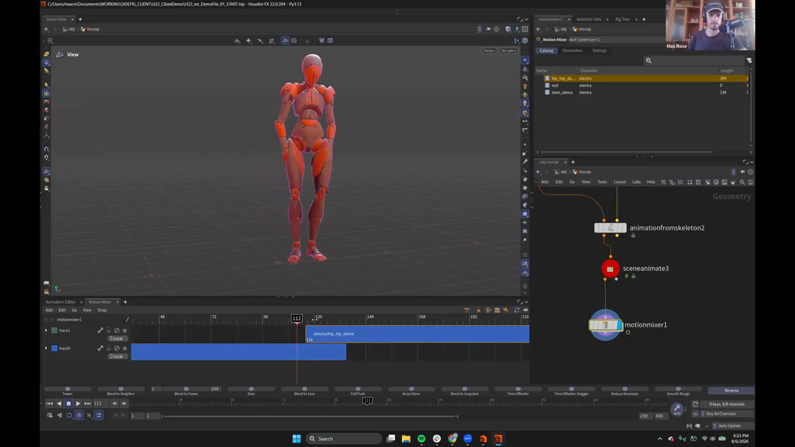
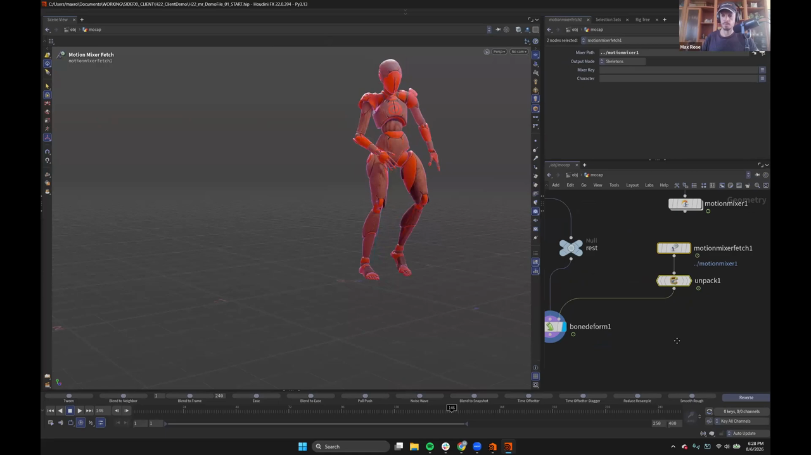

Houdini 22 KineFX アニメーション 7 — Motion Mixer でモーキャプを合成して書き出す
出典: Animate in KineFX | Part II | Max Rose | Houdini Illume （SideFX 公式ウェビナー / 講師 Max Rose さん / Houdini FX 22.0.394 / 1:01:45 / 英語）の 19:20〜30:00 部分。 このページは、上記の動画を見ながら自分用にまとめた日本語の学習メモです。SideFX 公式の翻訳ではありません。 前回はモーキャプを自作キャラにリターゲットするでした。
この記事で扱うこと
リターゲットしたモーキャプを Motion Mixer で組み合わせ、 手で修正を入れて、最後に FBX として書き出すところまでです。
1. クリップを並べる

Catalog に入っているクリップはこうなっていました。
| Name | Character | Length |
|---|---|---|
slam_dance | electra | 134 |
hip_hip_dance | electra | 399 |
rest | electra | 0（Pose） |
まず slam_dance を置き、続けて hip_hop_dance を置いて重ねると、
Part I のびっくり箱と同じようにブレンドされます。
ただし足が滑ります。2つのクリップで足の位置が違うためです。
2. Match Joint で足を接地させる
これが今回の目玉のひとつでした。特定のジョイントを基準にクリップを合わせられます。
- 合わせたいクリップ（ここでは hip hop dance）を選択します
Edit→Match Joint- 矢印ボタンからジョイントを選びます。フィルタに
L footと入れると候補が絞れます L foot ankle IKを選んでAcceptMatch Allを押します。位置と向きの両方を合わせます
これで足が接地したまま次のポーズへ移るようになります。 クリップ同士を繋ぐときの滑りは、この手順で潰せます。
3. ブレンドをやわらげる — weight を音量のように扱う
クリップを重ねただけだとリニアなブレンドになります。 もう少しなめらかにしたい、ということで、新しいトラックを使います。
- 新しいトラックを作り、クリップをドラッグします
- 上のトラックが下のトラックを上書きします
- トラックの weight にキーを打って、効き具合を時間で変えます
DAW（Ableton のようなデジタルオーディオワークステーション）を触ったことがあれば、 この weight を音量のように考えてもらえればわかりやすいと思います。
weight を下げたキーと上げたキーを足すだけで、 リニアではないなめらかな移り変わりになりました。
4. Motion Mixer の中でそのままアニメーションできる
ここが Part I からの改善点です。
変更を加えたくなっても、前回のように Motion Mixer Fetch へ出す必要はありません。 Motion Mixer の中で直接アニメーションできます。
- 新しいトラックを追加して
animationなどと名付けます - そのトラックに
animateエフェクトを追加します - トラックの横にあるボタンを押すと、アニメーションステートに入ります
あとは通常のアニメーション作業と同じです。 下地のモーキャプの上に、レイヤーで修正を乗せていけます。
動画では腕が脚に食い込んでいたので、2点にキーを打って当たらないように直していました。 モーキャプの上に手作業の修正を重ねる、という流れがそのまま Motion Mixer 内で完結します。
5. 書き出す

他のパッケージ（Unreal など）に持っていく手順です。
Motion Mixer Fetch でシーンから取り出す
Motion Mixer Fetchを置き、Mixer Path に Motion Mixer を指定します （画面では../motionmixer1、Output Mode はSkeletons）- これでアニメーション済みの骨格が出てきます
ここが落とし穴
Motion Mixer Fetch から出てくるものは、骨格ではあるもののまだパックされています。 APEX の形式のままです。ポイント数を見ると、原点に1点しかありません。
そのため Unpack を通す必要があります。上の画像でも
motionmixerfetch1 → unpack1 → bonedeform1 と繋がっています。
足りないものを揃える
書き出しにはレスト骨格とジオメトリも要ります。これは
別途 Unpack Character を置いて Electra から取り出します。
配線が混乱しないよう、別に置くのがおすすめとのことでした。
3つ揃ったら Bone Deform に繋いで、正しく動いているか確認します。
ROP FBX Character Output
ROP FBX Character Output に繋ぎます。
| 入力 | 渡すもの | 必須 |
|---|---|---|
| 1 | ジオメトリ | 必須 |
| 2 | レスト骨格 | 必須 |
| 3 | アニメーション | 任意 |
3つ目にアニメーションを入れれば1ファイルにまとまりますが、 講師の方の好みはキャラクターとアニメーションを別々に書き出す方式でした。
キャラクターはレスト骨格付きのスキンキャラクターとして1つ書き出し、 アニメーションはアニメーションクリップとして別に書き出しておきます。 そうすれば好きなときに好きなクリップを使えます。
アニメーション側は ROP FBX Animation Output を使います。
この記事のまとめ
- クリップを重ねると足が滑ります。
Edit→Match Joint→Match Allで接地させます - ジョイント選択はフィルタ（
L footなど）で絞ると早いです - リニアなブレンドが気に入らなければ、トラックの weight を音量のようにキーで制御します
- Motion Mixer の中に
animateエフェクトのトラックを足せば、そのまま手直しできます（Fetch に出す必要なし） Motion Mixer Fetchの出力はまだパックされています。Unpackが必要です- レスト骨格とジオメトリは別途
Unpack Characterから取ります ROP FBX Character Outputはジオメトリとレスト骨格が必須。アニメーションは3つ目の任意入力です
次はいよいよ最終回、プロシージャルと手付けを組み合わせて蛇に木を登らせます。